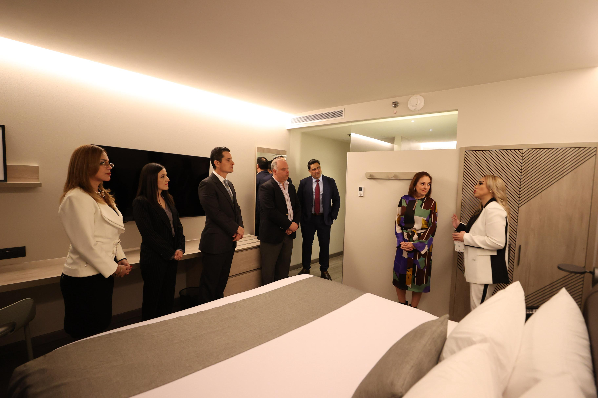

- Suma Norte 19 Promotora de Hoteles ocho propiedades y 1,090 habitaciones en operación en la ciudad regiomontana
Monterrey, Nuevo León, 31 enero de 2025.- Norte 19 Promotora de Hoteles inaugura el Hotel City Express
Plus by Marriott Monterrey Centro, su octava propiedad en la ciudad de Monterrey. Con esta apertura,
la empresa ofrece un total de 1,090 habitaciones disponibles para los viajeros de placer y negocios
que visitan la ciudad. Este hotel se presenta como una excelente opción de hospedaje para quienes
buscan funcionalidad y comodidad durante su estancia.

La ceremonia de inauguración contó con la presencia de destacadas personalidades, incluyendo a la Mtra. Maricarmen Martínez Villarreal, secretaria de Turismo del Estado de Nuevo León; el Lic. Emmanuel Loo, secretario de Economía del Estado de Nuevo León; el Lic. Fernando Jesús Margáin Sada, jefe de Gabinete del Gobierno Municipal de Monterrey; la Lic. Silvia Nancy García, directora general de Turismo y Cultura del Gobierno Municipal de Monterrey; la Lic. Ximena Tamariz, secretaria de Desarrollo Económico del Gobierno Municipal de Monterrey; el Mtro. Leonardo Schlesinger, director general de Norte 19 Promotora de Hoteles; el Lic. Alberto Granados, director de Operaciones de Norte 19 Promotora de Hoteles; y la Lic. Vania Genoveva Garza García, gerente general del hotel City Express Plus by Marriott Monterrey Centro, su presencia resaltó la importancia y el impacto positivo que este proyecto tendrá en la región.
El Mtro. Leonardo Schlesinger, director general de Norte 19 Promotora de Hoteles, mencionó: “El hotel 152 de Norte 19 ofrece 140 habitaciones y los servicios que caracterizan a la marca, como centro de negocios, salones de juntas, gimnasio, servicio de alimentos a la carta en el Café Plus”.
El hotel City Express Plus by Marriott Monterrey Centro cuenta con una ubicación estratégica, al encontrarse dentro de la plaza comercial Nomad Living Monterrey, situada en Melchor Ocampo 1002, en el centro de esta metrópoli. Monterrey es reconocida como la capital industrial de México porque atrae a visitantes de negocios por la presencia de importantes corporativos nacionales e internacionales.
Durante la fase de construcción del hotel, Norte 19 generó más de 150 empleos directos, y para su etapa de operación cuenta con 30 empleos directos y más de 25 empleos indirectos, apoyando así a la economía estatal. Además, este hotel opera bajo los lineamientos de sostenibilidad que caracterizan a la empresa y la han posicionado como una de las empresas líderes en innovación y sostenibilidad.
El hotel es ideal para los viajeros de negocios por su cercanía a empresas como Cemex, Financiera Mexi y Seguros Banorte. También tiene rápido acceso a la zona Valle y las oficinas para realizar el trámite de visas se encuentran a tan solo unos pasos. Para complementar, los huéspedes tienen la oportunidad de explorar sitios históricos, artísticos y de espectáculos emblemáticos como el Parque Fundidora o el Museo de Arte Contemporáneo de Monterrey (MARCO). Aquellos que busquen aventura podrán descubrir las maravillas naturales de la región, como las Grutas de García y Chipinque.
City Express Plus by Marriott Monterrey Centro forma parte del portafolio de más de 30 marcas extraordinarias de hoteles de Marriott Bonvoy, el programa de viajes global de Marriott International. El programa ofrece a los socios experiencias exclusivas en Marriott Bonvoy Moments y beneficios incomparables que incluyen noches gratis y reconocimiento de estatus Elite; además de la oportunidad de acumular y redimir puntos en compras diarias con las tarjetas de crédito de marca compartida.
Con esta inauguración, Norte 19 Promotora de Hoteles se afianza como la compañía líder en México en el desarrollo, construcción y administración de hoteles y amplía su red de operación de 157 propiedades bajo seis marcas hoteleras con un total de 18,292 habitaciones en México, Colombia, Chile y Costa Rica. La empresa está presente en más de 75 ciudades y 30 estados en ubicaciones estratégicas de las rutas industriales y turísticas más importantes.
Acerca de City Express by Marriott
City Express by Marriott ofrece a los viajeros un espacio donde la practicidad
se une al confort. Satisfaciendo las necesidades de los viajeros de negocios y
de placer, ofrece estadías eficientes en ubicaciones convenientes que garantizan
un viaje sin complicaciones. Con un enfoque en la calidad y la simplicidad, los
huéspedes hacen más que hospedarse, se relajan, recargan energías y se preparan
para comenzar su día. Con alrededor de 150 propiedades en 4 países, City Express
by Marriott, nuestra marca insignia, se complementa con City Express Plus by
Marriott, City Express Suites by Marriott, City Express Junior by Marriott y
City Centro by Marriott, cada una diseñada exclusivamente para un segmento
diferente de viajeros. City Express by Marriott se enorgullece de participar
en Marriott Bonvoy®, el programa global de viajes de Marriott International.
El programa ofrece a los socios un portafolio extraordinario de marcas, experiencias
exclusivas a través de Marriott Bonvoy Moments y beneficios incomparables que
incluyen noches gratis y reconocimiento de estatus Elite. Para inscribirse de
forma gratuita o para obtener más información sobre el programa, visite Marriott
Bonvoy. Para obtener más información o hacer reservaciones, visite marriott.com;
para obtener las últimas actualizaciones de la compañía, visite news.marriott.com.
Acerca de Norte 19 Promotora de Hoteles
Norte 19 es una empresa mexicana, que ofrece soluciones integrales para la
industria hotelera, dedicada a ofrecer servicios que abarcan desde el diseño
y desarrollo de hoteles hasta la operación y gestión de negocios hoteleros
de primer nivel. Con una trayectoria de más de dos décadas, Norte 19 se ha
destacado por su compromiso con la excelencia en el servicio, la innovación
en tecnología y la eficiencia en la operación. Norte 19, opera más de 150
hoteles en México, Colombia, Costa Rica y Chile, estableciendo asociaciones
sólidas con marcas reconocidas y adaptándose continuamente a las demandas
del mercado. Norte 19 actualmente tiene en su portafolio las marcas City
Centro by Marriott, City Express Suites by Marriott, City Express Plus
by Marriott, City Express by Marriott, City Express Junior by Marriott y HS Hotsson.